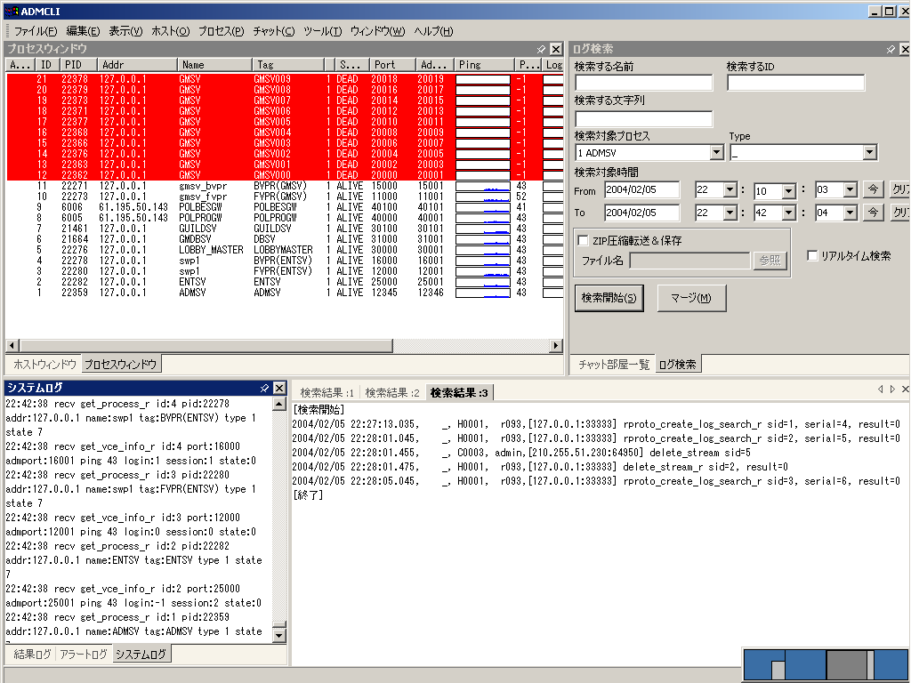

[トップ] [変更履歴] [目次] [用語] | [AdmCli] [ADMSV] [RSV] | [VCE-Log] [VCEモニター]
AdmCli-Help [トップ]
Japanese | English
Admin client(admcli.exe) とは， admsv(監視サーバー)に接続して使う， Windows用GUIプログラムのことです．
パッケージ内では、cli/ 内に含まれています。
